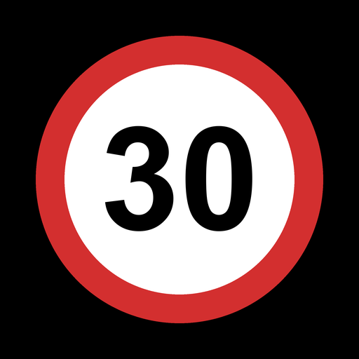

was erlaubt
„was erlaubt“ ist eine Android-App, die auf dem Display groß anzeigt, wie schnell du auf der aktuellen Straße fahren darfst – abhängig von deiner Fahrtrichtung. Die Daten stammen aus OpenStreetMap und lassen sich je Bundesland offline speichern. Kein Konto, keine Werbung, kein Tracking.
- Großes Tempo-Schild, auch als kleines Fenster über der Navigation
- Richtungsabhängige und zeitabhängige Limits
- Offline-Karten für alle Bundesländer, wöchentlich aktualisiert
- Freie Software (GNU GPL v3)